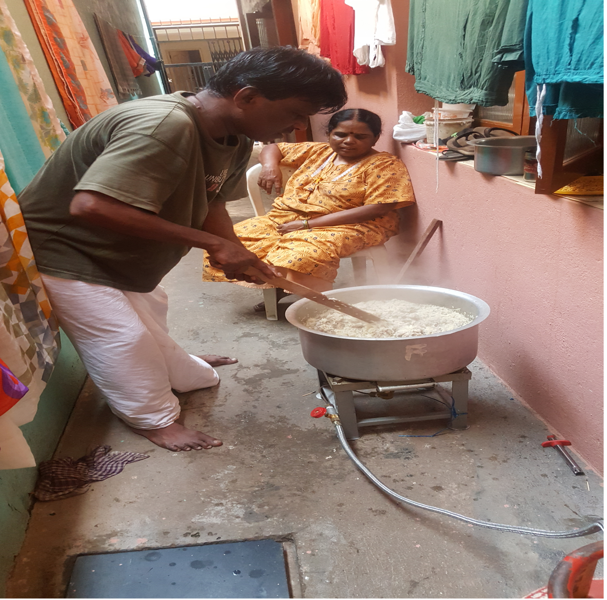

OVERVIEW

WE LOVE
WE CARE

Saving one animal won't change the world, but it will change the world for that one animal.
We are a team of ardent animal lovers driven to help the voiceless.Being humans, let's be the voice for the voiceless.WSA provides shelter for sick, old and abandoned dogs, cats, cows and every other animal. The dogs are not chained or caged, they have enough space to walk, run, play and chase other dogs. At the shelter, it is indeed a dog's life! There are only few cages in the shelter for those that are undergoing treatment.
The main aim of this trust is little and submitted gathering,WE SAVE ANIMALS(WSA) WELFARE TRUST have made a begin by concentrating on the lives of the animals. Some of the programs experienced by the WE SAVE ANIMALS(WSA) WELFARE TRUST welfare society are
Medical treatment provided by NGOs helps improve the overall health and well-being of animals. It enables the prevention, diagnosis, and treatment of various diseases, injuries, and medical conditions. This ensures that animals receive the necessary care to live healthy, pain-free lives.
The rehabilitation center provides necessary medical care for injured or sick animals. This includes treatments for wounds, fractures, infections, and other ailments. Veterinary professionals or trained caregivers administer medications, perform surgeries if needed, and monitor the animals' progress throughout their rehabilitation.
NGOs strive to find suitable homes for animals in their care, particularly those that have been rescued, abandoned, or are in need of new homes. They work towards matching animals with responsible and loving adopters who can provide a safe and nurturing environment.
In this captivating gallery, we invite you to delve into a tapestry of heartwarming stories and remarkable journeys. Each image encapsulates the tireless efforts of our dedicated team, as we stand as guardians for the voiceless and vulnerable creatures we share this planet with. From injured wildlife rehabilitated with tenderness to abandoned pets finding loving forever homes, these snapshots embody the indomitable spirit of rescue and the power of human empathy.